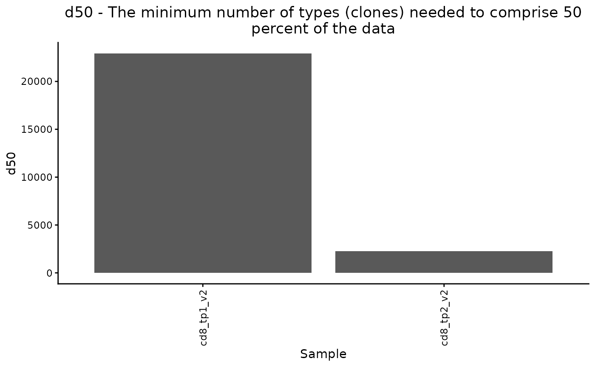
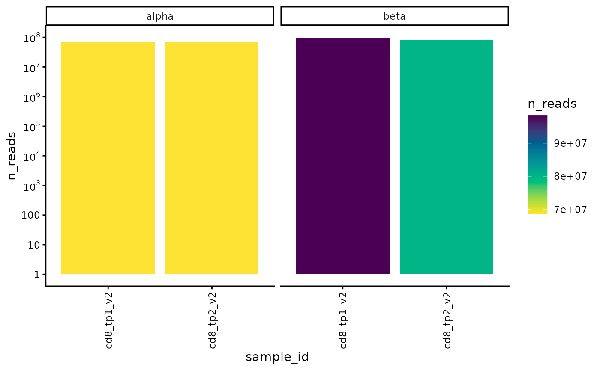
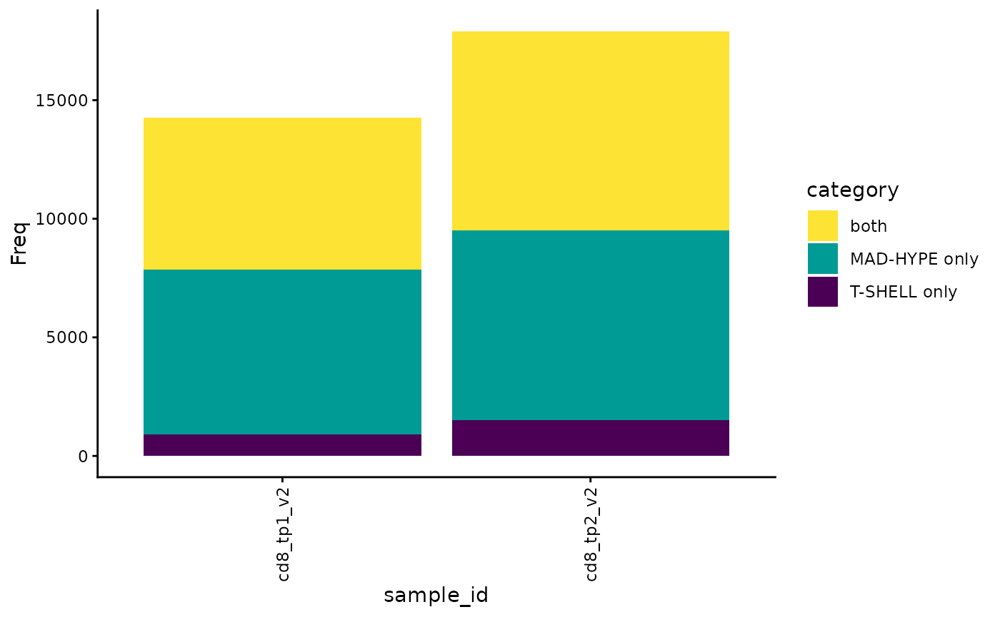
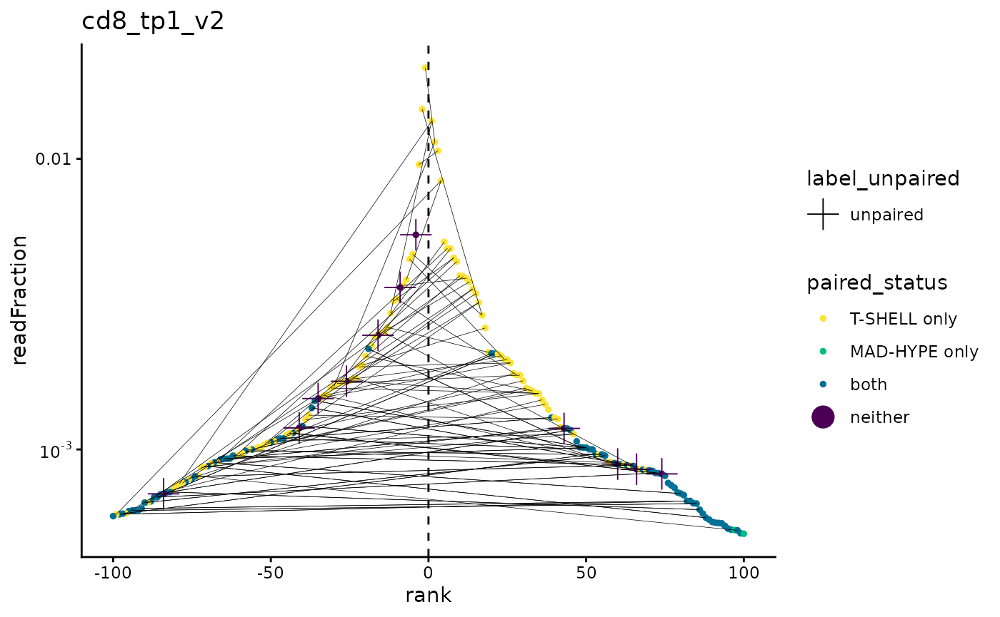
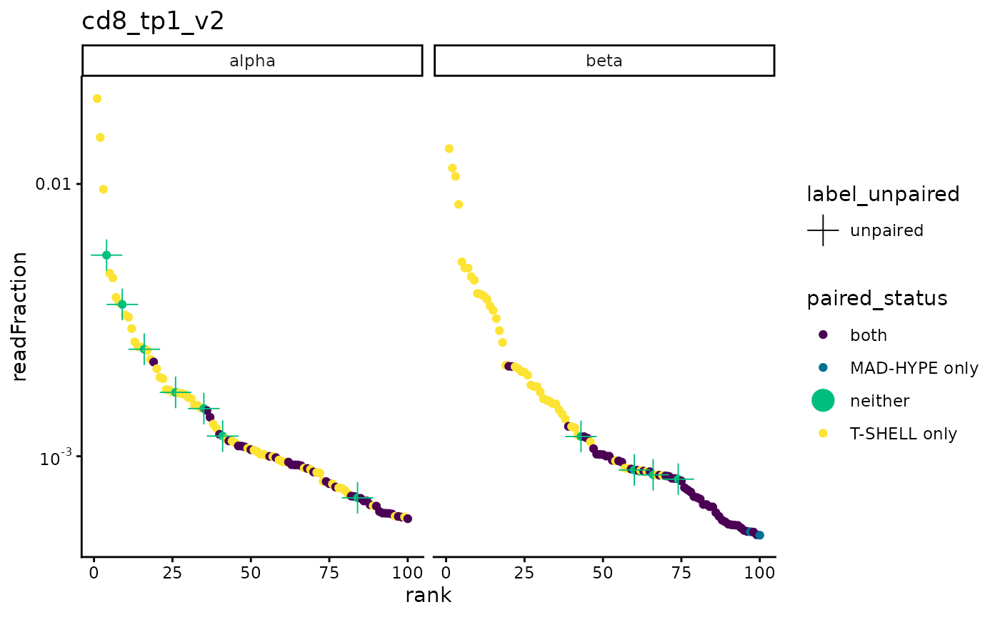

Plot examples with SJTRC COVID-19 data
plot_examples.RmdThis vignette loads paired TCR TIRTLseq data from the St. Jude Tracking Study of Immune Responses Associated with COVID-19 (SJTRC) and shows examples of the package’s plotting functions.
Load the package
## Error in system("nvidia-smi", intern = TRUE, ignore.stderr = TRUE) :
## error in running commandLoad the SJTRC COVID-19 data
folder = system.file("extdata/SJTRC_TIRTL_seq_longitudinal", package = "TIRTLtools")
dir(folder)## [1] "cd4_tp1_v2_pseudobulk_TRA.tsv.gz" "cd4_tp1_v2_pseudobulk_TRB.tsv.gz"
## [3] "cd4_tp1_v2_TIRTLoutput.tsv.gz" "cd4_tp2_v2_pseudobulk_TRA.tsv.gz"
## [5] "cd4_tp2_v2_pseudobulk_TRB.tsv.gz" "cd4_tp2_v2_TIRTLoutput.tsv.gz"
## [7] "cd4_tp3_v2_pseudobulk_TRA.tsv.gz" "cd4_tp3_v2_pseudobulk_TRB.tsv.gz"
## [9] "cd4_tp3_v2_TIRTLoutput.tsv.gz" "cd8_tp1_v2_pseudobulk_TRA.tsv.gz"
## [11] "cd8_tp1_v2_pseudobulk_TRB.tsv.gz" "cd8_tp1_v2_TIRTLoutput.tsv.gz"
## [13] "cd8_tp2_v2_pseudobulk_TRA.tsv.gz" "cd8_tp2_v2_pseudobulk_TRB.tsv.gz"
## [15] "cd8_tp2_v2_TIRTLoutput.tsv.gz" "cd8_tp3_v2_pseudobulk_TRA.tsv.gz"
## [17] "cd8_tp3_v2_pseudobulk_TRB.tsv.gz" "cd8_tp3_v2_TIRTLoutput.tsv.gz"
sjtrc = load_tirtlseq(folder, meta_columns = c("marker", "timepoint", "version"), sep = "_")## 65.601 sec elapsedProcess the data
When we initially load the data, the data frames lack some information that is needed for plotting functions.
The TIRTL_process() function runs 3 other package
functions to add this information to the data frames:
-
add_single_chain_data()- adds single-chain read counts/fractions to the paired TCR data frames -
identify_paired()- adds a column to pseudobulk data indicating which single-chains were paired -
identify_non_functional_seqs()- adds columns to paired data frames indicating whether CDR3A/B amino acid sequences are functional (not containing stop codons or frameshifts)
If clean = TRUE is specified, the
clean_pairs() function is also run before the preceding
functions. This function removes excess pairs for alpha and beta chains.
Biologically, we expect that each alpha is paired with at most one beta
and that each beta is paired with at most two alphas in a clone. Here we
use clean = FALSE to show how the data looks as-is.
sjtrc = TIRTL_process(sjtrc, clean = FALSE) ## Adding single-chain data to paired dataframe for sample 1
## Adding single-chain data to paired dataframe for sample 2
## Adding single-chain data to paired dataframe for sample 3
## Adding single-chain data to paired dataframe for sample 4
## Adding single-chain data to paired dataframe for sample 5
## Adding single-chain data to paired dataframe for sample 6
##
## Annotating data with pairing status by MAD-HYPE and T-SHELL algorithms for sample 1
## Annotating data with pairing status by MAD-HYPE and T-SHELL algorithms for sample 2
## Annotating data with pairing status by MAD-HYPE and T-SHELL algorithms for sample 3
## Annotating data with pairing status by MAD-HYPE and T-SHELL algorithms for sample 4
## Annotating data with pairing status by MAD-HYPE and T-SHELL algorithms for sample 5
## Annotating data with pairing status by MAD-HYPE and T-SHELL algorithms for sample 6Longitudinal plots for individual TCRs or groups of TCRs
For CD8-selected T-cells, we get the nucleotide sequences for the 5 most frequent beta chains for timepoints 1 and 2 and show their frequencies across all samples and timepoints.
We can see they are highly frequent at CD8 timepoint 3, but not in any of the CD4 samples.
top_clones1 = sjtrc$data$cd8_tp1_v2$beta %>% arrange(desc(readFraction)) %>% head(5) %>% extract2("targetSequences") %>% as.character()
top_clones2 = sjtrc$data$cd8_tp2_v2$beta %>% arrange(desc(readFraction)) %>% head(5) %>% extract2("targetSequences") %>% as.character()
plot_clone_size_across_samples(sjtrc, clones = c(top_clones1, top_clones2), chain = "beta")
plot_clonotype_indices(sjtrc)
div = calculate_diversity(sjtrc, chain = "beta", metrics = "d50")##
## -- Calculating diversity indices for sample 1 of 6.
## -- Calculating diversity indices for sample 2 of 6.
## -- Calculating diversity indices for sample 3 of 6.
## -- Calculating diversity indices for sample 4 of 6.
## -- Calculating diversity indices for sample 5 of 6.
## -- Calculating diversity indices for sample 6 of 6.
plot_diversity(div, metric = "d50")
plot_n_reads(sjtrc)
plot_num_partners(sjtrc)
plot_paired(sjtrc)
plot_paired_by_read_fraction_range(sjtrc, chain = "beta")
plot_paired_vs_rank(sjtrc, sample = 1)
plot_pairs_with_eachother(sjtrc, sample = 1)
plot_ranks(sjtrc)
plot_read_fraction_vs_pair_status(sjtrc, sample = 1)
plot_sample_overlap(sjtrc, chain = "beta")
plot_sample_vs_sample(sjtrc$data$cd8_tp1_v2, sjtrc$data$cd8_tp2_v2)